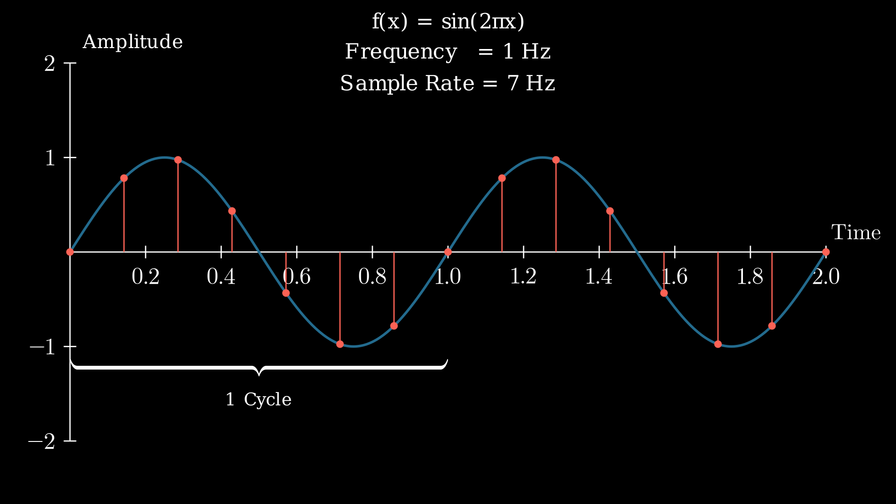
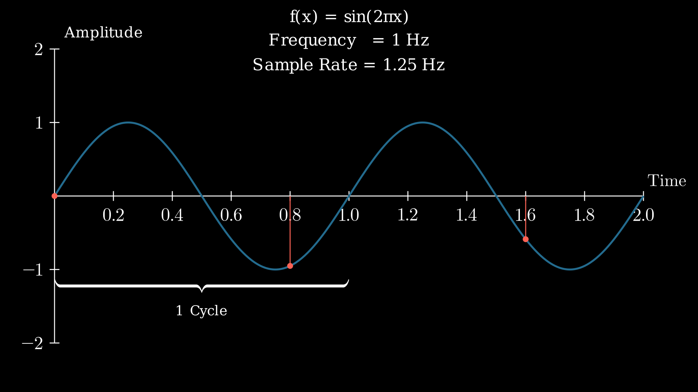
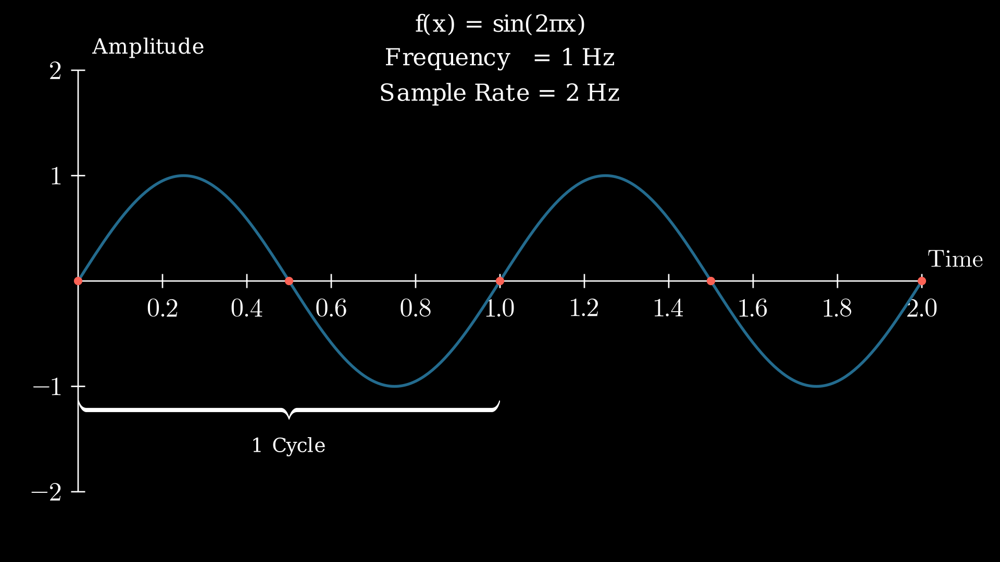
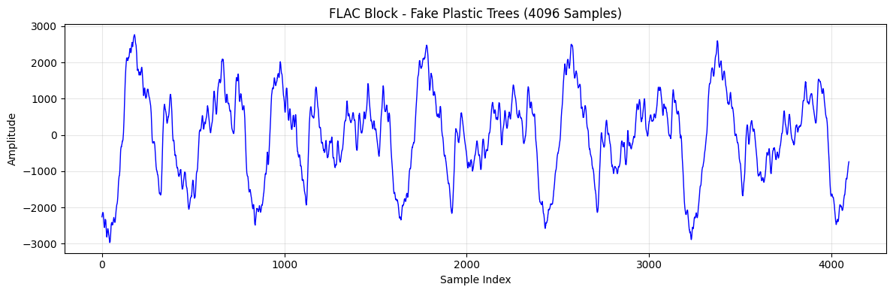
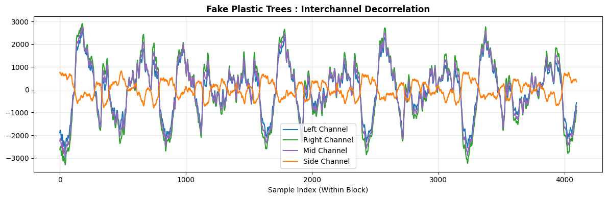
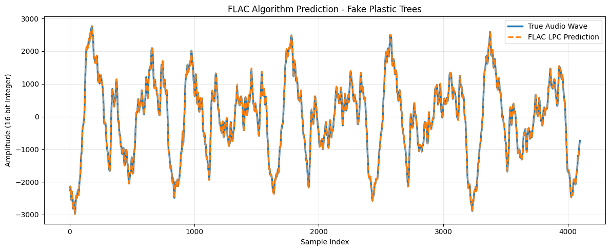
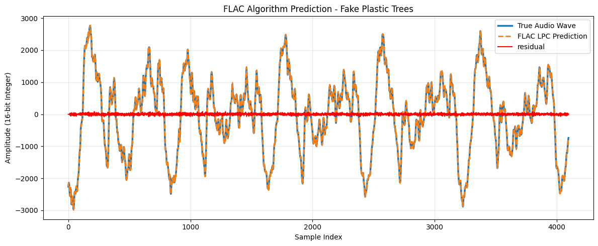
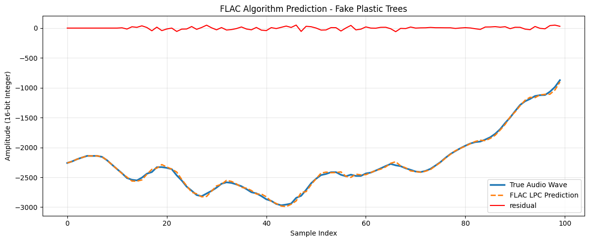
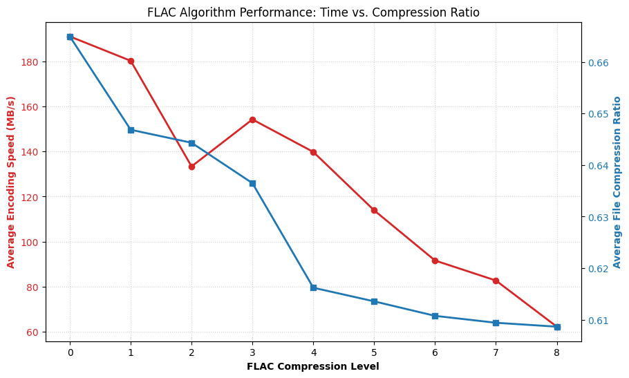

An Analysis of the Free Lossless Audio Codec (FLAC) Algorithm
Introduction
In July of 2001, Josh Coalson would release the Free Lossless Audio Codec, commonly referred to as FLAC (Pronounced the same as flack). This was the first open source and patent free lossless audio compression that would quickly become a favorite among audiophiles. If you enjoy music or algorithmic analysis, breaking down how FLAC works is quite fun and very interesting. To achieve lossless audio compression, the FLAC encoding algorithm utilizes linear predictive coding to reduce the amount of information we have to store while still being able to reconstruct the original audio. This leads to a heavy imbalance to where encoding takes significantly longer to allow for near instantaneous decoding allowing us to skip to any point in a song and the audio immediately continuing to play. FLAC also allows us to dictate how compressed we want the audio to be, defined as the prediction order, at the tradeoff of encoding time. This page dives into how FLAC successfully compresses audio without losing audio data that of which is typical in audio compression.
Important Terminology
Before examining how the algorithm works to compress and encode, there are some important terms that need to be defined before doing so.
- Lossless Compression: Reducing storage size of an audio file without losing audio data
- Lossy Compression: Reducing storage size of an audio file but permanently losing audio data

To visualize the idea of Lossless vs Lossy audio above is a spectogram of the song Starless by King Crimson. If you have never seen or analyzed a spectogram, the X-axis is time, the Y-axis is frequency (Hz), and the color represents volume, with brighter colors being louder than darker colors. The top spectogram is a lossless FLAC file while the bottom is the common lossy MP3 file type. The first thing to notice is the cut off around 18,000 Hz that happens in the MP3 file where audio often doesnt surpass. This is one of the things the MP3 encoder does to cut down on required storage as the audio begins to reach the human hearing frequency limit (~20,000 Hz) it deems it as non-essential to the overall sound. The other thhing to look at is the change in volume where the MP3 lessens the volume of some frequencies as human can only typically focus on a smaller range of frequencies at a given time.
- Linear Pulse Code Modulation (Linear PCM): Uncompressed, digital method for encoding audio signals by sampling the amplitude at uniform intervals
- Sample Rate: Amount of audio samples (Linear PCM measurements) per second
- Bit Depth: Amount of bits used to represent an audio sample
- Rice Coding: This is a form of Golomb Coding aiming at reducing the amount of bits needed to represent numbers with the prior knowledge that the numbers will typically be or near zero.
- Nyquist-Shannon Theorem: A sound wave can be reconstructed as long as the sampling rate is greater than twice the audible frequency (fs > 2fmax). Human hearing limit is roughly 20,000 Hz so the lowest sampling rate in audio recording is 44,100 Hz.
To visualize the Nyquist-Shannon Theorem here are 3 graphs showing how it works on a simple sine wave wth a frequency of 1 Hz:

Above is an example using a sampling rate of 7 Hz, satisfying fs > 2fmax . If given just the red dots you would be able to reconstruct the blue sin wave to its original form.

Above is an example with a sampling rate of 1.25 Hz, not satisfyingfs >2fmax . If given only the red dots you could not predict the original shape, let alone even predict that it was a sine wave.

Last is an example showing why the sampling rate can not be equal to 2fmax . When sampling at exactly twice the original frequency we get a straight horizontal line of red dots making it impossible to reconstruct the original sine wave.
You may be asking "How can we know it is this exact wave?" Which is a valid question. To answer this we have to remember that human hearing limits cap audible frequency at 20,000 Hz. To find another sound wave that hits all these points we would have to increase the frequency of the line past a point of what humans could even hear. Overall, this isnt really needed to understand how the FLAC algorithm works but it helps some understand audio reconstruction/prediction.
The FLAC Encoding Algorithm
The FLAC encoding algorithm can be broken down into 4 stages:
- Blocking: This is where the audio seperated into smaller chunks of equal sample size, typically 4096 samples. This has a time complexity of O(N)
- Interchannel Decorrelation: Audio is typically stereo, meaning 2 audio channels typically a left and right channel. This stage aims exploit the similarity between the 2 channels to reduce the amount of information we need to store while remaining reconstructable. This has a time complexity of O(N)
- Prediction: Since audio often repeats itself its also somewhat easy to predict. If we can take a few of the first audio samples in a block and then create some prediction coefficients we could reconstruct a predicted line that is nearly the same as the original audio. This has a time complexity of O(N *P2) where P is the prediction order we are using. However P has a max value of 32 meaning P2 has a max value of 1024 which is insignificant compared to the size of N, the time complexity can be reduced to O(N * P)
- Residual Encoding: The last stage of the algorithm. After the prediction, we can take the difference between the actual and predicted to find the residual value that we know will be near zero and reduce the amount of bits needed to represent it even further. This has a time complexity of O(N)
The Blocking Stage
Rememeber that all audio is represented via Pulse Code Modulation, meaning each sound can be represented as a number. There are typically with 44,100 per second (on the lower end but is considered CD level recording), resulting in millions of samples in a song. The first stage consists of breaking the audio channels up into blocks of equal number of samples. 4096 samples is the typical block size as it allows for accurate prediction with shorter encoding times. The last block in the audio file does not have to be equal size so no padding is needed leading to less storage required. The block size used for audio data has a direct effect on the compression ratio. If the block size is too small, the resulting large number of frames means that a disproportionate number of bytes will be spent on frame headers. If the block size is too large, the characteristics of the signal may vary so much that the encoder will be unable to find a good predictor.

Here is one block of Fake Plastic Trees by Radiohead. It is 4096 samples long with each sample representing the amplitude of the wave at that sample. In this image we can also see the repitition found in audio that allows us to predict it in later steps. For the basis of understanding the algorithm we can treat this essentially as our whole audio file as what happens to a block happens to all blocks and only requires them to be stitched back together once done with the residual encoding stage.
The Interchannel Decorrelation Stage
Channels are often correlated in audio files. FLAC can explot this correlation by encoding the average of the channels or the difference between 2 channels. There are 4 possible methods for this
- Independent: All channels are coded independent of one another. This must be done when the file is not a stereo (2-channel) format.
- Mid-Side: The left and right blocks are converted to what is coined as a mid and side subframes. To calculate the mid subframe its just the average between the 2 channels (or adding them and bit shifting to the right by 1 bit.) The side subframe is simply calculated by subtracting the right channel from the left channel. This allows the original audio channels to be recalculated while decreasing the bits needed to represent them.
- Left-Side: The left channel is encoded as is and a side channel is calculated the same as it is in mid-side and is then encoded.
- Side-Right: The Right channel is encoded as is and a side channel is calculated the same as it is in mid-side and is then encoded.

Here is the same block from Fake Plastic Trees that we used above showing the different values in the channel. Notice that the side channel is way smaller than the other channels leading to it being used in all but the independent option.
The Prediction Stage
With the new channels calculated we can begin to calculate the values needed to predict them using Linear Predictive Coding (LPC). This uses Levinson-Durbin recursion to find the prediction order amount of prediction coefficients. There are 4 methods that FLAC uses in this stage to predict them
- Verbatim: Samples are stored directly as no good model could find accurate predictions.
- Constant: A single value is stored. This isnt used often but can be used in cases of pure digital silence.
- Fixed Predictor: FLAC predicts each sample using 1 of the 5 fixed predictors in the algorithm. This is used in simple waveforms and doesnt store any prediction coefficients.
- Linear Predictor: Samples are predicted using past samples and a set of predictor coefficients, and the error of this prediction is processed by the residual coder. Compared to a fixed predictor, using a generic linear predictor adds overhead as predictor coefficients need to be stored. Therefore, this method of prediction is best suited for predicting more complex waveforms.

Here is the predicted values for the same block we have been using. A set if "warmup" samples are kept meaning however many prediction coefficients we have, we keep an equal amount of the first samples as is. This allows us to only need to store the prediction coefficients and warmup samples to reconstruct the predicted wave with the difference between the actual and predicted being handled in a later stage. The next sample can be calculated by
Where:
- x̂[n] = The predicted value of the current audio sample.
- p = The predictor order (the number of past samples used, typically between 1 and 32 in FLAC).
- ck = The prediction coefficient for the past sample at step k.
- x[n-k] = The actual, previously decoded past audio sample.
- n = The index of the current sample being predicted.
- k = The summation index, representing how many steps back we are looking.
Residual Encoding
Predictors are only predicting audio so they will have some error. The error though will be small so we can use rice coding to shorten the amount of bits needed. Since we can reconstruct all of the predictions just from the warmup samples and prediction coefficients this is the only thing we have to store from the sample. For an example of how rice coding works, one can be found here


Notice that the resiudal is near zero for most of the block. This is where rice coding excels in decreasing the amount storage needed.
FLAC Performance Findings
To see how the different compression levels effect the encoding speed as well as compression ratio, I tested my actual music library of roughly 2000 songs at each compression level and measured their speed and compression ratio.

By default the algorithm has a compression level of 5. The level 2 compression performs poorly due to it using a block size of 2048 leading to more predictions needing to be made. As you can see after level 4, the benefits begin to diminish as the compression level increases, not even gaining a whole percent in compression ratio yet at only 65% of the encoding speed.